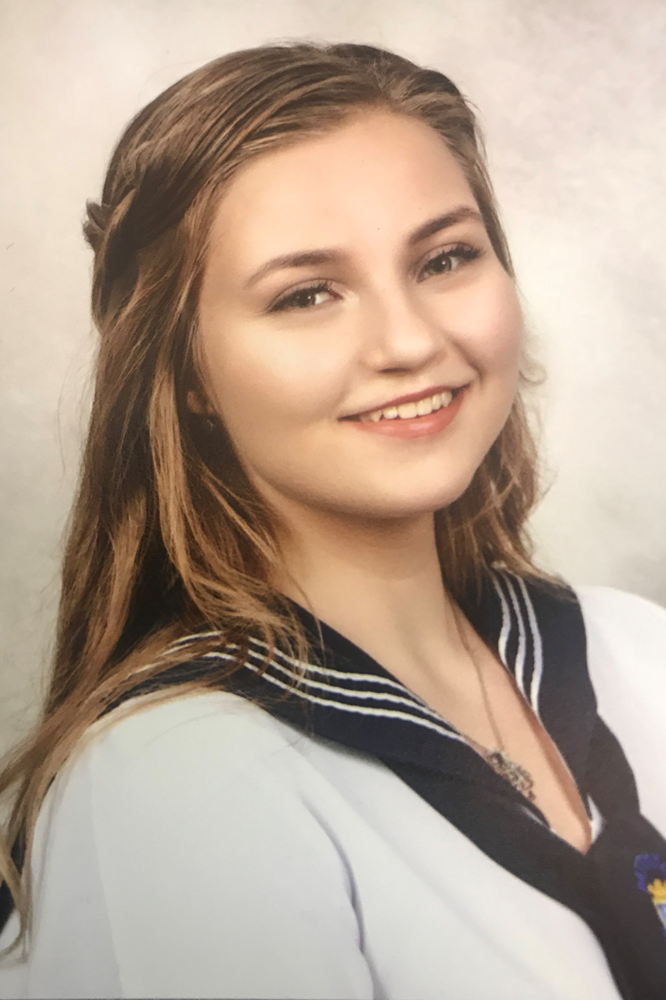
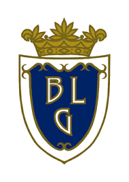
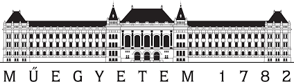

Vas Lilla portfólió
Rólam
 Lilla vagyok, 18 éves. Nagykanizsán születtem, de Budapestre költöztem a felsőfokú tanulmányaim miatt. Nagykanizsán jártam általános iskolába és gimnáziumba is. Jelenleg első éves egyetemista vagyok. Szabadidőmben szeretek rajzolni és sütni.
Tanulmányaim
- 
- 
A Zrínyi Miklós-Bolyai János Általános Iskola után 2015-ben a Batthyány Lajos Gimnáziumban kezdtem el a középfokú tanulmányimat. Emelt szintű érettségit tettem matematikából. Az érettségi után elkezdtem a BME ipari termék- és formatervező mérnök szakát, ahol jelenleg is tanulok.
Hobbijaim
Nagyon sok hobbim van. Szeretek sütni, és utazni. Európában nagyon sok helyen jártam már, de legalább ugyanennyi úticélom van még. Imádok rajzolni és festeni, és sűrűn készítek DIY díszeket, ajándékokat.
Céljaim
ELsődleges célom, hogy sikeresen elvégezzem az egyetem alapképzését. Utána is szeretnék tanulni, és elvégezni a mesterszakot. Az egyetem után leginkább egy saját vállalkozás a célom, ahol saját magam tervezhetem meg a termékeimet. Leginkább a bútortevezés a belső építészet érdekel.